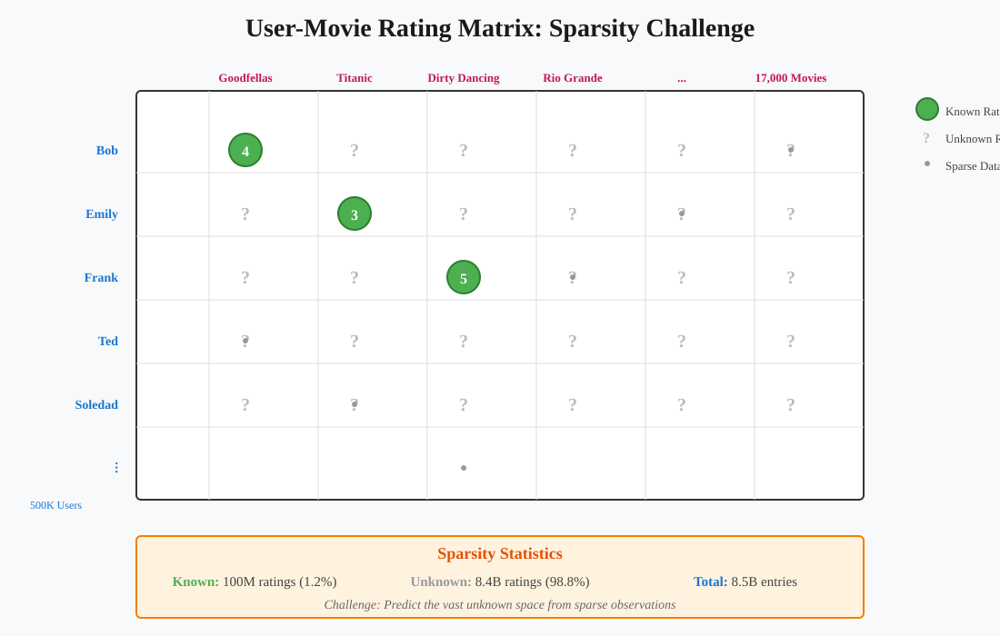
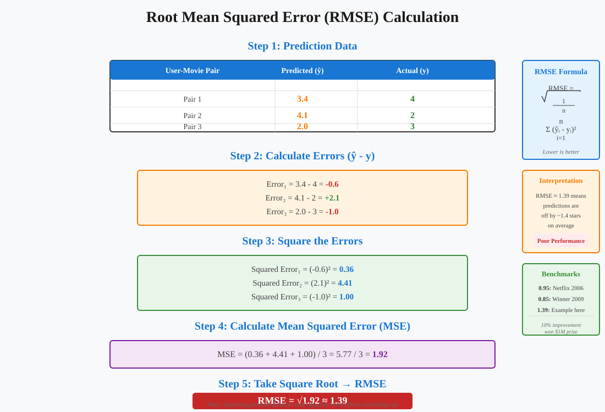

Recommendation Systems: Data Science Foundations
📋 Quick Navigation
- Introduction
- The Netflix Prize Competition
- Data Organization and Matrix Representation
- Evaluation Metrics: RMSE
- Comparison with Dating Applications
- Business Objectives and Strategic Considerations
- Mathematical Formulation
- Implementation Considerations
- References & Further Reading
Introduction
Recommendation systems represent one of the most impactful applications of machine learning in modern digital platforms. These systems power product suggestions on Amazon, movie recommendations on Netflix, and potential matches on dating applications like Tinder and eHarmony.

Core Objective:
The fundamental goal of a recommendation system is to predict user preferences for items they haven't yet interacted with, enabling personalized suggestions that enhance user experience and drive engagement.
Key Questions:
- Data Structure: How should we organize and represent recommendation data?
- Prediction Task: What specific values are we trying to predict?
- Evaluation: How do we measure the quality of our recommendations?
Beyond Binary Classification:
While recommendation can be framed as a simple yes/no classification problem (should we recommend this item to this user?), modern systems go much further by:
- Ranking items: Ordering products by predicted preference
- Predicting ratings: Estimating numerical scores users would assign
- Optimizing objectives: Balancing multiple business goals simultaneously
The Netflix Prize Competition
In 2006, Netflix launched one of the most influential data science competitions in history, offering a $1 million prize for the first team to improve their recommendation system performance by at least 10%.
Competition Structure:
Dataset Characteristics:
- 100 million triplets in the training set
- Format: (User, Movie, Rating)
- Scale: ~500,000 users × 17,000 movies
- Rating scale: Integer values from 1 to 5
- Test set: 1 million incomplete triplets for prediction
Example Data Format:
(Bob, Goodfellas, 4)
(Emily, Titanic, 3)
(Frank, Dirty Dancing, 5)
(Ted, ?, ?)
(Soledad, ?, ?)
Competition Impact:
The Netflix Prize achieved far more than improving one company's algorithm. It:
- Democratized data science: Attracted academics, researchers, engineers, students, and hobbyists worldwide
- Created a new industry: Launched the data science competition business model
- Advanced the field: Generated novel approaches to collaborative filtering and matrix factorization
- Provided economic value: $1 million prize was cost-effective compared to traditional R&D investment
Historical Performance:
- 2006 baseline: Netflix's system achieved RMSE of 0.95
- 2009 winner: BellKor's Pragmatic Chaos reduced RMSE to 0.85
- Improvement: 10.5% reduction after three years of intense competition
Data Organization and Matrix Representation
The most natural way to organize recommendation data is through a matrix structure where rows represent users, columns represent items, and cells contain ratings or interactions.

Matrix Structure:
Dimensions:
- Rows: Users (e.g., 500,000 for Netflix Prize)
- Columns: Items/Movies (e.g., 17,000 for Netflix Prize)
- Entries: Ratings or interaction scores
Example User-Movie Matrix:
Goodfellas Titanic Dirty Dancing Rio Grande ...
Bob 4 - - - ...
Emily - 3 - - ...
Frank - - 5 - ...
Ted - - - ? ...
Soledad - - - - ...
The Sparsity Challenge:
One of the defining characteristics of recommendation systems is extreme data sparsity. In the Netflix Prize dataset:
- Total possible entries: 500,000 users × 17,000 movies = 8.5 billion ratings
- Known entries: 100 million ratings
- Sparsity: Only 1.2% of the matrix is observed
- Unknown entries: 98.8% of ratings are missing
Visual Representation:
Imagine a vast table where:
- Known ratings appear as sparse dots scattered across the matrix
- Unknown ratings represent the overwhelming majority of cells
- Challenge: Predict the unknown values using only the sparse observed data
Mathematical Notation:
In linear algebra, such a table of numbers is called a matrix, denoted as:
[a₁,₁ a₁,₂ a₁,₃ ...]
A = [a₂,₁ a₂,₂ a₂,₃ ...]
[a₃,₁ a₃,₂ a₃,₃ ...]
[ ⋮ ⋮ ⋮ ⋱ ]
Where:
- A = rating matrix
- aᵢ,ⱼ = rating given by user i to movie j
- ? = missing/unobserved rating
The Core Problem:
How does knowing that Frank loves Dirty Dancing (rating: 5) help predict whether Ted will enjoy the Western film Rio Grande? This seemingly impossible task becomes tractable through:
- Statistical modeling: Making realistic structural assumptions about user preferences
- Linear algebra: Leveraging powerful algorithmic tools for matrix operations
- Efficient algorithms: Scaling to datasets with billions of potential entries
Evaluation Metrics: RMSE
Root Mean Squared Error (RMSE) serves as the primary evaluation metric for recommendation systems, particularly in the Netflix Prize competition.

Definition:
RMSE measures the average magnitude of prediction errors, giving higher weight to larger errors due to the squaring operation.
Step-by-Step Calculation:
Example Data:
| User-Movie Pair | Predicted Rating | Actual Rating |
|---|---|---|
| Pair 1 | 3.4 | 4 |
| Pair 2 | 4.1 | 2 |
| Pair 3 | 2.0 | 3 |
Step 1: Calculate Errors
Error₁ = 3.4 - 4 = -0.6
Error₂ = 4.1 - 2 = 2.1
Error₃ = 2.0 - 3 = -1.0
Step 2: Square the Errors
Squared Error₁ = (-0.6)² = 0.36
Squared Error₂ = (2.1)² = 4.41
Squared Error₃ = (-1.0)² = 1.00
Step 3: Calculate Mean Squared Error (MSE)
MSE = (0.36 + 4.41 + 1.00) / 3 = 5.77 / 3 = 1.92
Step 4: Take Square Root
RMSE = √1.92 ≈ 1.39
Mathematical Formula:
RMSE = √(1/n × Σᵢ₌₁ⁿ (ŷᵢ - yᵢ)²)
Where:
- n = number of predictions
- ŷᵢ = predicted rating for observation i
- yᵢ = actual rating for observation i
- Σ = summation over all observations
Interpretation:
Performance Benchmarks:
- RMSE = 1.39: Poor performance (from example above)
- RMSE = 0.95: Netflix baseline (2006)
- RMSE = 0.85: Winning solution (2009)
- Target: Lower RMSE indicates better predictions
Practical Meaning:
An RMSE of 1.39 means that, on average, the algorithm's predictions deviate from true ratings by approximately 1.4 points on a 5-point scale. This is substantial considering users only have 5 discrete choices.
Continuous Predictions:
While actual ratings are integers (1, 2, 3, 4, 5), predictions can be real numbers like 4.52 or 3.87. This allows algorithms to:
- Express uncertainty: Values between integers indicate less confidence
- Minimize error: Fine-tuning predictions reduces RMSE
- Handle edge cases: Better represent boundary decisions (e.g., between 4 and 5)
Recommendation Threshold:
Once predictions are generated, simple rules convert them to recommendations:
if predicted_rating >= 4.2:
recommend_movie_to_user()
Comparison with Dating Applications
Recommendation systems extend beyond product suggestions to human matchmaking, with dating platforms presenting unique challenges.
Tinder: Binary Preference Matrix
Data Structure:
Emily Lisa Sarah ...
Frank 0 ? 0 ...
Ted 1 ? 1 ...
Eugene 0 1 ? ...
Matrix Properties:
- Rows: Male users
- Columns: Female users
- Entries: Binary values (0 = swipe left, 1 = swipe right)
- Symmetry: Not required (mutual preferences)
eHarmony: Compatibility Index Matrix
Data Structure:
Emily Lisa Sarah ...
Frank 0 ? 0 ...
Ted 1 ? 1 ...
Eugene 0 1 ? ...
Key Difference:
- Entry meaning: Compatibility score rather than explicit swipe
- Computation: Derived from extensive side information
- Score type: Continuous value indicating match probability
Side Information Collection:
Dating platforms gather rich user profiles including:
- Personal preferences: Food, books, music, hobbies
- Media consumption: Favorite TV series, movies, bands
- Physical features: Extracted from photos using computer vision
- Activity patterns: Types of activities and interests
- Personality traits: Derived from questionnaire responses
Example Profile Features:
user_profile = {
"favorite_food": "Italian",
"favorite_books": ["Fiction", "Sci-Fi"],
"favorite_band": "The Beatles",
"hobbies": ["Hiking", "Photography"],
"tv_series": ["Breaking Bad", "Friends"]
}
Feature Extraction from Photos:
Modern dating platforms use computer vision to extract:
- Clean shaven vs. Minimal earwax
- Winning smile vs. Neutral expression
- Activity type: Indoor vs. outdoor settings
- Style indicators: Fashion and grooming choices
Critical Distinction: User-to-User Matching
Product Recommendation (Netflix, Amazon):
- One-sided preferences: Users have preferences, products don't
- Objective: Match users to items they'll enjoy
- Simpler problem: Only user satisfaction matters
Dating Recommendation (Tinder, eHarmony):
- Mutual preferences required: Both users must be interested
- Objective: Create mutually compatible matches
- Complex problem: Must satisfy both parties simultaneously
- Stability: Matches should be long-lasting and mutually beneficial
Business Objectives and Strategic Considerations
Beyond simple accuracy, recommendation systems must balance multiple business objectives that extend far beyond predicting ratings.
Netflix: Multiple Objectives
Primary Goal:
Recommend movies users will enjoy and rate highly.
Secondary Objectives:
- Information gathering: Show diverse summary pages to collect more user behavior data
- Engagement optimization: Maximize browsing time and interaction
- Content promotion: Highlight newly acquired or exclusive content
- Retention: Keep users subscribed and active
The Complete Matrix Challenge:
Netflix needs to predict all entries in the user-movie matrix, not just highly-rated ones, because:
- Browsing patterns: Understanding which movies users explore (even if not watched) provides valuable data
- Negative signals: Movies users avoid also inform their preferences
- Exploration vs. exploitation: Balance showing safe picks with discovering new interests
Amazon: Profit-Driven Recommendations
Beyond Purchase Probability:
Amazon may prioritize expected revenue over likelihood of purchase.
Example Scenario:
Coffee Machine A:
- Purchase probability: 20%
- Profit per sale: $10
- Expected value: 0.20 × $10 = $2
Coffee Machine B:
- Purchase probability: 10%
- Profit per sale: $100
- Expected value: 0.10 × $100 = $10
Strategic Decision:
Recommend Machine B despite lower purchase probability because expected profit is 5× higher.
Multi-Objective Optimization:
recommendation_score = (
α × predicted_rating +
β × expected_profit +
γ × inventory_pressure +
δ × cross_sell_potential
)
Where:
- α, β, γ, δ = weights balancing different objectives
- predicted_rating = user satisfaction estimate
- expected_profit = margin × purchase probability
- inventory_pressure = need to clear stock
- cross_sell_potential = likelihood of additional purchases
Context-Specific Entry Meanings:
The values in recommendation matrices represent different concepts depending on the application:
- Netflix: Predicted ratings (1-5 stars)
- Amazon: Expected revenue or purchase probability
- Tinder: Match probability or mutual interest score
- eHarmony: Long-term compatibility index
- Spotify: Listen probability or engagement score
Parallel Recommendation Systems:
Large platforms often run multiple recommendation algorithms simultaneously:
- System 1: Optimizes user satisfaction (ratings)
- System 2: Optimizes revenue (profit margins)
- System 3: Optimizes engagement (time on platform)
- Ensemble: Combines outputs using business logic and A/B testing
Mathematical Formulation
Recommendation systems leverage linear algebra and statistical modeling to transform sparse observations into complete predictions.
Matrix Completion Problem:
Given:
- Observed entries: Ω = {(i,j) : rating aᵢ,ⱼ is known}
- Rating matrix: A ∈ ℝᵐˣⁿ (m users, n items)
- Sparsity: |Ω| << m × n
Objective:
Predict all missing entries in A to create complete matrix Â.
Low-Rank Assumption:
The key insight enabling prediction is that rating matrices exhibit low-rank structure:
A ≈ U × Vᵀ
Where:
- A ∈ ℝᵐˣⁿ = rating matrix
- U ∈ ℝᵐˣᵏ = user latent factors
- V ∈ ℝⁿˣᵏ = item latent factors
- k << min(m,n) = number of latent dimensions
Interpretation:
Each user and item can be represented by k latent features (e.g., genres for movies, taste profiles for users). The rating is approximately the dot product of these representations.
Optimization Problem:
minimize Σ(i,j)∈Ω (aᵢ,ⱼ - uᵢᵀvⱼ)² + λ(||U||² + ||V||²)
Where:
- First term: Reconstruction error on observed ratings
- Second term: Regularization preventing overfitting
- λ = regularization parameter
Prediction Formula:
For any user i and item j:
âᵢ,ⱼ = uᵢᵀvⱼ = Σₖ₌₁ᴷ uᵢ,ₖ × vⱼ,ₖ
Structural Assumptions:
Why Low-Rank Works:
- User similarity: Users with similar taste have similar latent vectors
- Item similarity: Similar items have similar latent vectors
- Transitivity: If User A likes Item 1, User B likes Item 1, and User B likes Item 2, then User A likely likes Item 2
- Dimensional reduction: User preferences driven by small number of fundamental factors
Example Latent Factors (Movies):
k=1: Action vs. Drama
k=2: Mainstream vs. Indie
k=3: Old vs. New
k=4: Comedy level
k=5: Romance level
Algorithmic Toolbox:
Linear algebra provides efficient algorithms for:
- Matrix factorization: Decomposing A into U and V
- Singular Value Decomposition (SVD): Computing optimal low-rank approximations
- Alternating Least Squares (ALS): Iteratively optimizing U and V
- Gradient descent: Minimizing reconstruction error
- Scalability: Handling matrices with billions of entries
Implementation Considerations
Scaling Challenges:
Netflix Real-World Scale:
- Competition dataset: 500K users × 17K movies
- Production system: Millions of users × tens of thousands of titles
- Daily updates: Real-time incorporation of new ratings
- Computational cost: Matrix operations on billions of entries
Efficient Algorithms:
Alternating Least Squares (ALS):
# Pseudocode for ALS
initialize U, V randomly
for iteration in range(max_iterations):
# Fix V, optimize U
for user i:
uᵢ = (VᵀV + λI)⁻¹ Vᵀaᵢ
# Fix U, optimize V
for item j:
vⱼ = (UᵀU + λI)⁻¹ Uᵀaⱼ
compute RMSE on validation set
if converged: break
Parallel Computing:
- User updates: Can be parallelized across users
- Item updates: Can be parallelized across items
- Distributed systems: Spark, Hadoop for large-scale deployment
Side Information Integration:
Content-Based Features:
# Movie features
movie_features = {
"genres": ["Action", "Thriller"],
"director": "Christopher Nolan",
"year": 2010,
"cast": ["Leonardo DiCaprio", "Tom Hardy"],
"budget": 160_000_000,
"runtime": 148
}
# User features
user_features = {
"location": "California, US",
"device": "iPhone",
"subscription_tier": "Premium",
"browsing_history": [...],
"demographics": {...}
}
Hybrid Models:
Combine collaborative filtering with content-based methods:
âᵢ,ⱼ = uᵢᵀvⱼ + wᵤᵀfᵤ(i) + wᵥᵀfᵥ(j)
Where:
- uᵢᵀvⱼ = collaborative filtering component
- fᵤ(i) = user content features
- fᵥ(j) = item content features
- wᵤ, wᵥ = learned feature weights
Cold Start Problem:
Challenge:
New users or items have no rating history, making collaborative filtering impossible.
Solutions:
- Content-based initialization: Use features to generate initial recommendations
- Popularity baseline: Recommend trending items to new users
- Active learning: Prompt users to rate popular items
- Transfer learning: Leverage patterns from similar users/items
Model Evaluation:
Training/Validation/Test Split:
- Training: 80% of observed ratings
- Validation: 10% for hyperparameter tuning
- Test: 10% for final evaluation
Cross-Validation:
- Time-based split: Train on past, test on future
- User-based split: Ensure users in test have training data
- K-fold: Multiple train/validation splits
References & Further Reading
Academic Papers:
- Matrix Factorization Techniques for Recommender Systems - Koren, Bell, and Volinsky (2009)
-
IEEE Computer Society, foundational paper on collaborative filtering
-
The BellKor Solution to the Netflix Grand Prize - Koren (2009)
-
Describes the winning approach combining multiple models
-
Collaborative Filtering for Implicit Feedback Datasets - Hu, Koren, and Volinsky (2008)
-
Extends recommendations beyond explicit ratings
-
Factorization Machines - Rendle (2010)
- General framework incorporating side information
Books:
- Recommender Systems: The Textbook - Aggarwal, Charu C. (2016)
-
Comprehensive coverage of algorithms and applications
-
Recommender Systems Handbook - Ricci, Rokach, and Shapira (2015)
- Extensive reference covering theory and practice
Online Resources:
- Netflix Prize Dataset: Kaggle
-
Access the original competition data
-
Surprise Library: Python Package
- Scikit-learn style library for building recommendation systems
ArXiv Papers:
- Deep Learning based Recommender System: A Survey - Zhang et al. (2019)
-
arXiv:1707.07435 - Modern neural approaches
-
Neural Collaborative Filtering - He et al. (2017)
- arXiv:1708.05031 - Deep learning for recommendations
Hugging Face Models:
- BERT4Rec: huggingface.co/models
-
Transformer-based sequential recommendation
-
SASRec: huggingface.co/models
- Self-attention for sequential recommendation
Industry Blogs:
- Netflix Tech Blog: netflixtechblog.com
-
Production recommendation system insights
-
Facebook Research: research.facebook.com
- Social network recommendation research
📊 Document Information:
- Version: 1.0
- Topic: Recommendation Systems Fundamentals
- Target Audience: AI learners, engineers, and researchers
- Prerequisites: Basic linear algebra, probability, and machine learning concepts
- Estimated Reading Time: 25-30 minutes